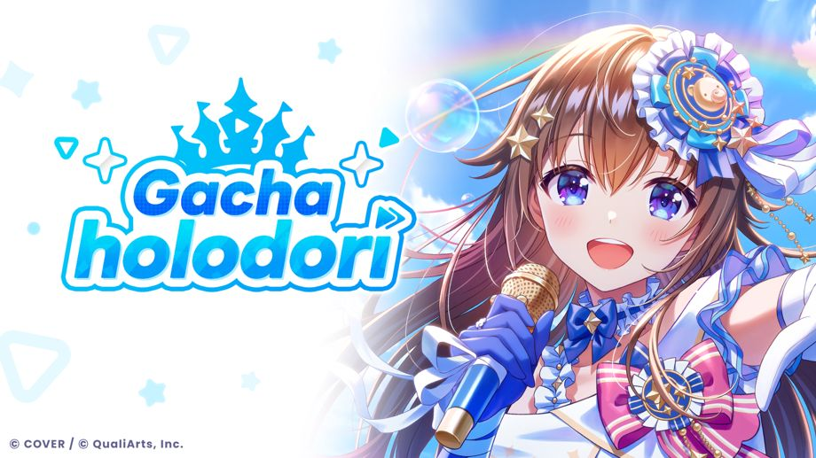

"Holodori Gacha" dengan 54 holomem telah tersedia!
◆Periode event
Peluncuran Layanan~
Mengenai Holosticker
"Holosticker" dapat diperoleh setelah mendapatkan member ★3 dan ★4 yang sudah mencapai tahap Mekar maksimal.
Selain itu, jika Gacha Pt tidak digunakan hingga kadaluarsa, maka itu akan ditukar menjadi "Holosticker."
"Holosticker" dapat ditukar dengan berbagai item di "Toko" → "Penukaran Holosticker".
Silahkan cek "Bantuan" → "Toko" → "Tentang Penukaran Holosticker" untuk informasi lebih lanjut.
Mengenai Holosticker Spesial
"Holosticker Spesial" akan diperoleh ketika mendapatkan karakter ★5.
Selain itu, "Holosticker Spesial" juga akan diperoleh ketika karakter ★5 mencapai tahap Mekar maksimal.
"Holosticker Spesial" dapat ditukar dengan berbagai item di "Toko" → "Penukaran Holosticker Spesial".
Silahkan cek "Bantuan" → "Toko" → "Tukar Holosticker Spesial" untuk informasi lebih lanjut.
Catatan Penting
・Durasi dan konten tiap campaign bisa berubah sewaktu-waktu.
・Untuk informasi penting mengenai gacha ini, silahkan cek "Gacha Screen" → "Detail Gacha" → "Perhatian".
・Untuk detail dari gacha ini, silahkan cek "Gacha Screen" → "Detail Gacha" → "Rasio penyediaan".